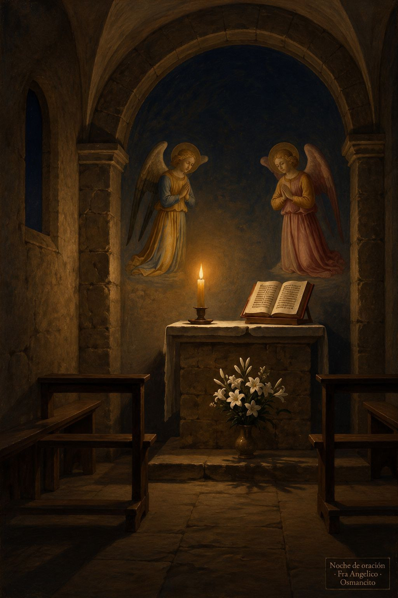

Capilla
Una capilla es un lugar pequeño destinado a la oración. La palabra viene del latín medieval cappella, diminutivo de cappa, capa: así se llamó el santuario donde se guardaba la capa de san Martín, y luego cualquier espacio pequeño de oración. Aquí, cada día, una lectura breve abre un espacio para la atención y el recogimiento.
Entradas
Cien ovejas y una · 5 de noviembre de 2026.
Antorchas en el mundo · 4 de noviembre de 2026.
Todavía hay lugar · 3 de noviembre de 2026.
En las manos de Dios · 2 de noviembre de 2026.
Los dichosos · 1 de noviembre de 2026.